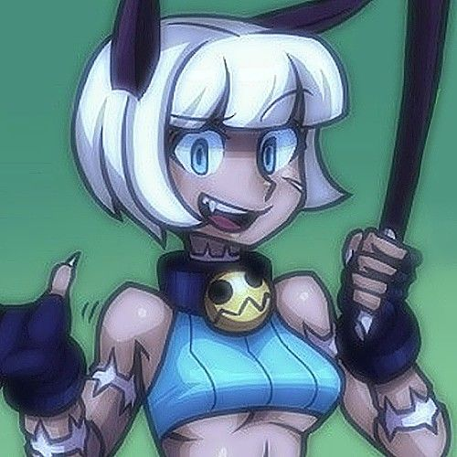

-- Purrfect Treasure --

Mini-Biography
Ms. Fortune (JP: ミス・フォーチュン Misu Fōchun), also referred to by her full name, Nadia Fortune (JP: ナディア・フォーチュン Nadia Fōchun), is a feline Feral who belonged to the Fishbone Gang, she was rendered undying when she swallowed the Life Gem she stole.
A rescue kitten who learned how to survive at an early age, Nadia Fortune is a crafty cat burglar who's a lighthearted mischievous scamp who fights for her friends. Ms. Fortune puts on a light hearted persona and makes constant puns. However she's still suffered as much as other members of the cast, and she's looking to resurrect her friends after they were killed by Black Dahlia. She frequents Yu-Wan's restaurant and she's friends with the people there, including Minette.
: Character Trivia :
Want to add a trivia question not featured here?

Ms. Fortune Gameplay